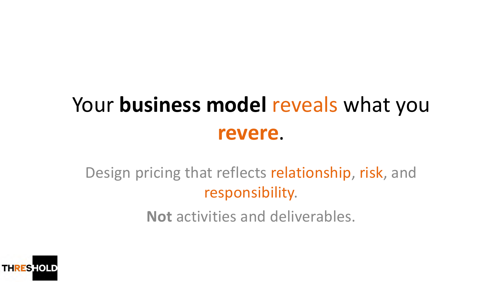
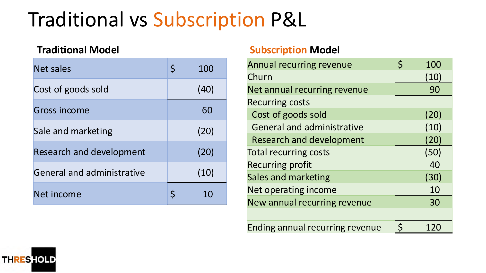
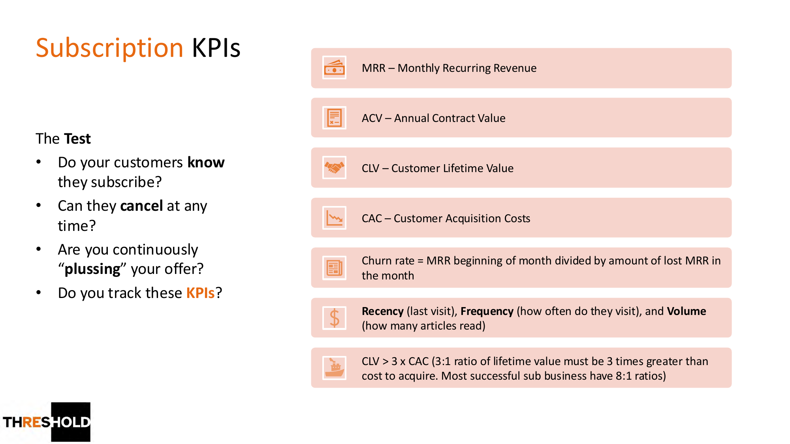
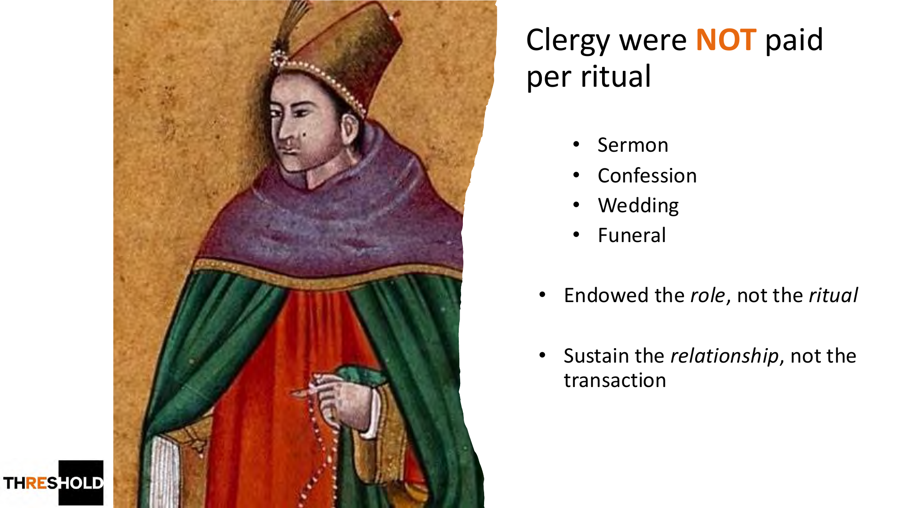
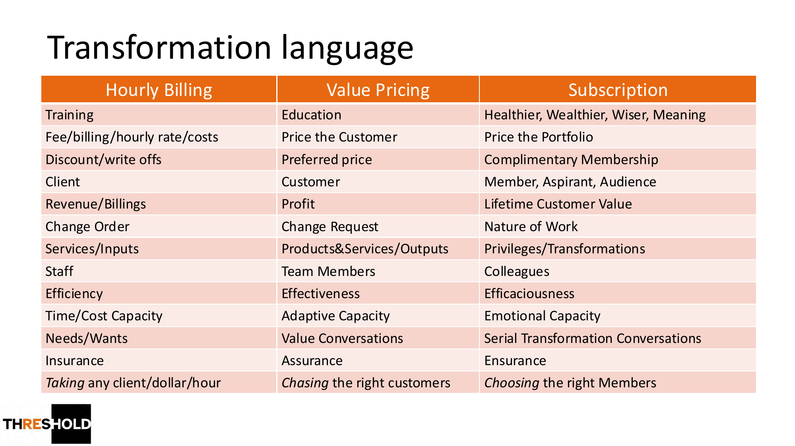

1 出发点
你的商业模式，揭示你尊崇什么
商业模式回答两个问题：你如何为客户创造价值，又如何捕获其中一部分价值。Ron Baker 提醒：定价应反映关系、风险与责任，而不是活动与交付物。换句话说，你怎么定价，暴露了你真正在乎什么。

2 财务结构
传统 P&L vs 订阅制 P&L
订阅制的损益表长得不一样：核心是年度经常性收入（ARR）与流失（churn）。它把注意力从"这个月开了多少单"转移到"经常性收入与净留存"，让企业价值更可预测、更可复利。

3 关键指标
跑订阅制，要盯这几个 KPI
MRR（月经常性收入）、ACV（年合同价值）、CLV（客户终身价值）、CAC（获客成本）、churn（流失率）。一条黄金法则：CLV > 3×CAC，最成功的订阅业务能做到 8:1。还有"四个测试"：客户知道自己在订阅吗？能随时取消吗？你在持续加码价值吗？你在跟踪这些 KPI 吗？

4 历史隐喻
中世纪的"圣俸"：为角色付费，而非仪式
Ron Baker 用一个有趣的类比：中世纪神职人员领取"圣俸（prebend）"——一份与土地、租金或什一税挂钩的供养。他们不是按每次布道、告解、婚礼、葬礼收费，而是供养这个"角色"本身。订阅制亦然：维系关系，而非交易。

5 语言的迁移
从计时收费 → 价值定价 → 订阅
"一切转化都是语言性的。"从计时收费到价值定价再到订阅，用词在系统性地改变：客户→会员、收入/账单→终身价值、服务/投入→特权/转化、员工→同事……改变对话，才能改变文化。

Key Takeaways
三句话记住订阅制
- 为组合定价，而非为服务定价——管理的是方差，靠组合里的赢家供养整体。
- 盯住经常性收入与 KPI——MRR / CLV / CAC / churn，并守住 CLV > 3×CAC。
- 维系关系，而非交易——把客户当作长期"会员"，持续加码价值与转化。